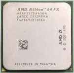

Overclocking The Athlon 64 chip, also known as the K8, from AMD is an excellent chip that in many instances, overclocks very nicely. With the memory controller directly embedded on the chip, the K8 is fast. 
When overclocking an K8 based system, there are a few numbers you have to deal with. First there is the base clock which is sometimes referred to as the HyperTransport, HT or HTT clock. This is synonmous with the Front Side Bus term used with Intel systems, which do not have integrated memory controllers.
With the base clock, which starts at 200 for Socket 939 Athlon64 Systems the speed of the CPU and memory can be inferred. The speed of the CPU is equal to the product of the base clock and the CPU's internal multipiler. For instance, the Athlon 64 4000+ has an internal CPU multiplier or 12. Therefore, it's starting speed is 2.4 Ghz. Unless youre running an Athlon 64 FX, the CPU multiplier is locked, and cannot be changed, so increases in the base clock are needed to overclock the CPU.
Memory is also influenced by the base clock. Memory for the ASUS K8V, is of the DDR variety. DDR runs in speeds of either 166, or more usually, 200 Mhz. Due to the way DDR operates, this can be effectivly doubled, and DDR memory is usually labelled as DDR333 (166 mhz) or DDR400 (200 mhz). The running speed of the memory is still quantified in the actual Mhz value, and is found by taking the quotient of the CPU-Clock rate divided by the CPU-unique memory divider.Overclocking Basics with the Athlon 64